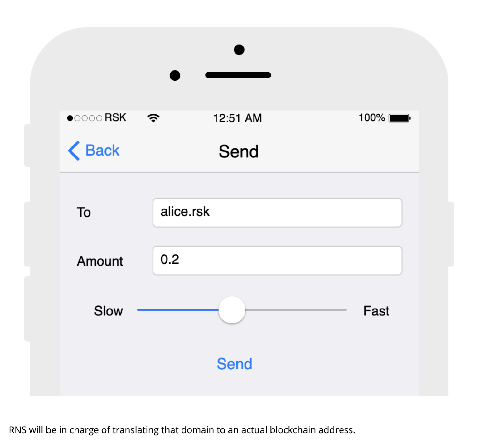
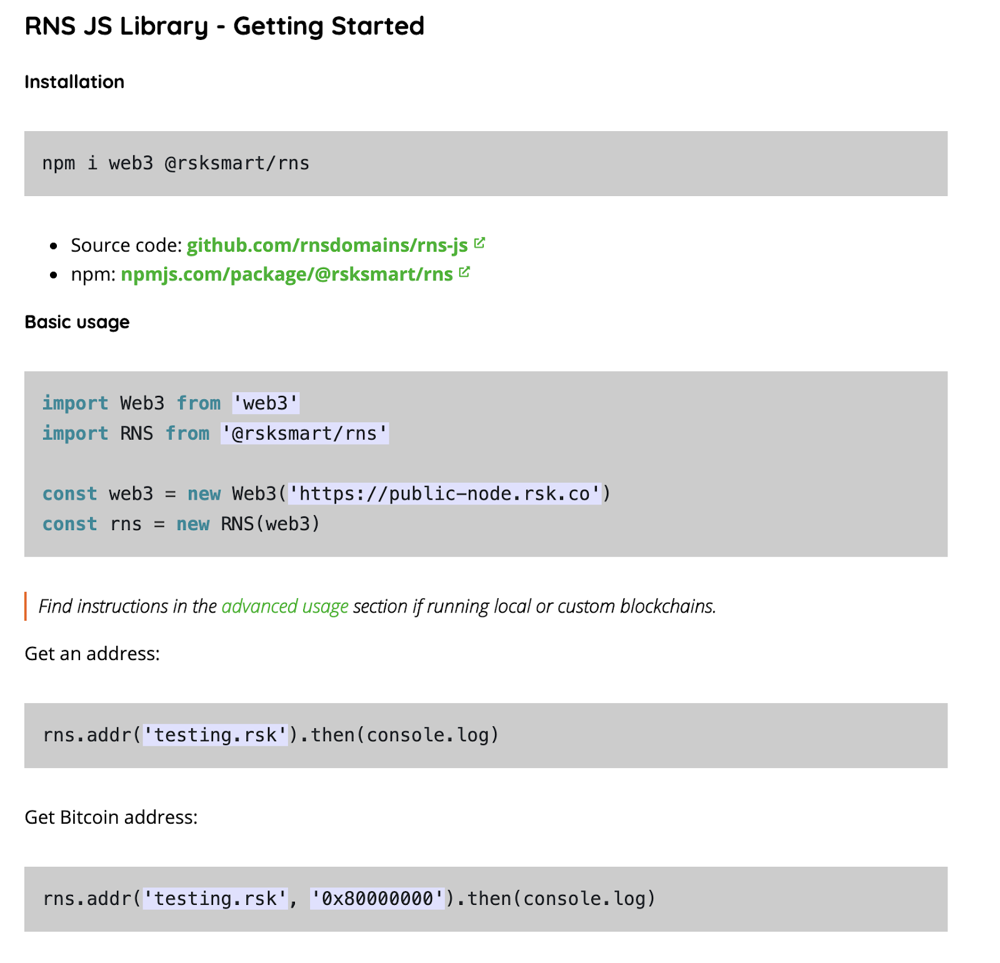
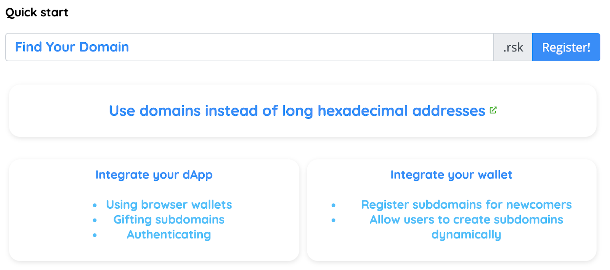

RIF 네임 서비스(RNS)는 사용자가 어느 블록체인에서나 읽을 수 있는(human-readable) 도메인을 보유할 수 있게 해 주는 분산형 서비스입니다. 이름과 주소를 연결하여 블록체인의 모든 것을 간편하게 식별하는 데 사용됩니다; (이 기사에서 도메인 등록을 하는 방법을 알아보세요). 좋은 아이디어이지만 블록체인 개발자가 아닌 경우 스마트 컨트랙트와 직접 상호작용하는 것은 상당히 어려운 일입니다. 전체 분산형 시스템과 상호작용하려면 많은 지식이 필요합니다. 단 하나의 컨트랙트더라도, 시작 전 블록체인 기본 사항을 반드시 갖추어야 합니다. 그래서 저희는 RNS JS 라이브러리를 만들게 되었습니다. 블록체인이 사용하기 간단하다면 채택이 더 쉬울 것입니다.

더 이상 ABI 컨트랙트 인스턴스화 또는 컨트랙트 주소 필요 없이, 하나의 라이브러리면 됩니다: RNS JS. 추가 환경 설정 없이 RSK Mainnet 또는 RSK Testnet로 작업하는 것은 완전히 사용자 정의할 수 있으며 사전 설정이 필요합니다. 더 이상 기다릴 필요 없이 시작해 봅시다.
간단한 예제 하나가 있지만, 이곳라이브러리에서 체크아웃하고 JS Fiddle에서 사용할 수 있는 많은 작업이 있습니다.
로컬 머신에서 실행하시겠습니까? 정말 간단합니다. 저희의 시작하기 튜토리얼에 대해 알아보세요. 설치 프로세스를 안내하고 RNS Hello World!를 실행하는 방법을 설명해드립니다.

블록체인 개발자들은 아마 로컬 노드를 전체 RNS suite와 함께 실행하기를 원할 것이므로 로컬 블록체인에 대한 라이브러리를 사용할 수 있습니다. 저희는 또한 하나의 커맨드로 전체 컨트랙트 suite를 설치할 수 있는 패키지를 보유하고 있습니다. 여기에서 확인하고, 준비가 되셨다면 여기; 에서 로컬 suite와 함께 사용할 RNS JS 라이브러리를 인스턴스화하는 방법을 확인하십시오. 이는 하나의 추가적인 매개변수입니다!
RNS JS라이브러리는 주로 기존 dapps와 월렛에 통합된 것으로 알려져 있습니다. 최종 사용자가 “1LcwUei5JgqQX4dGvszELEVX2Ggs54MhQ1” 또는 “0x52bc44d5378309ee2abf1539bf71de1b7d7be3b5” 대신에 “alice.rsk”에 송금하게 되면 얼마나 간편해질까요? 네, 비트코인과 이더리움 주소를 보았을 겁니다. RNS JS와 함께 RSK뿐만 아니라 모든 블록체인에서 주소를 해결할 수 있습니다. dApps 및 월렛과의 RNS 통합에 대하여 더 알고 싶다면 저희 통합 지침을 참고하십시오.

RNS JS은 개발자에 의해, 개발자를 위하여 만들어졌으며 저희는 항상 협업을 추구합니다. 제안이나 문제가 있는 경우, 연락 주시거나 https://github.com/rnsdomains/rns-js에서 요청해 주십시오.
Twitter 에서 @rif_os를 팔로우 하셔서 RIF의 최신 뉴스를 받아 보세요.